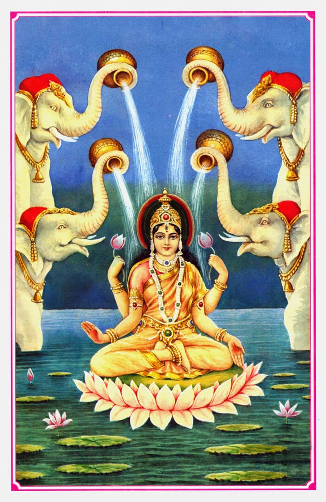
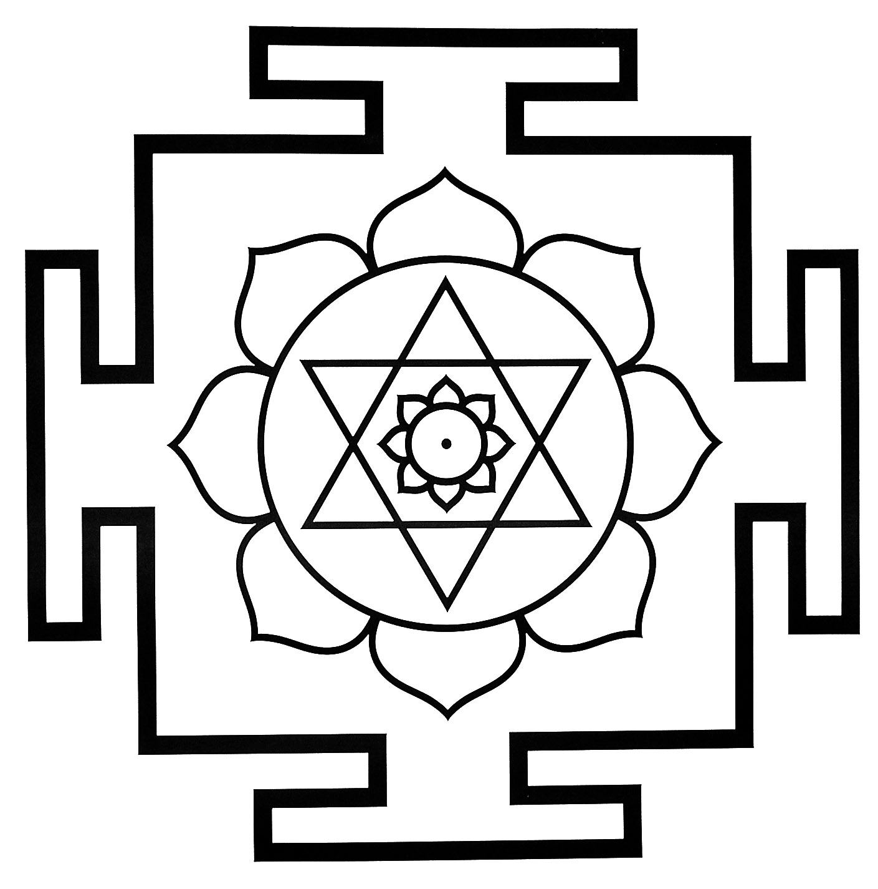
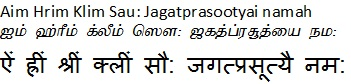
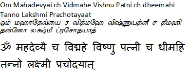

|
|||||
lordess sakthi
DASA MAHA VIDHYA
Kamala
|
 |
 |
|
Goddess
Kamala or Kamalathika, is situated at the tenth place in ten
colleges and is a symbol of divinity like Kamal or Padma
floral. Goddess Kamala, also known as Tantric Lakshmi , is
related to prosperity, happiness, prosperity, good fortune
and dynasty of Goddess. Goddess Kamala is situated at the
last place in the category of ten colleges . Goddess is
associated with Sattva, goddess of wealth and good fortune.
Cleanliness, purity, Nirmalata are very dear to Goddess and
Goddess resides in such places. The Goddess Kamala has a
close relationship with Prakash, the Goddess becomes the
place of residence where there is no darkness, on the other
hand, the Goddess's sister, Alkshmi, Jyeshtha, Neetti, who
are poor , related to unfortunate, dark and impure places
only their place of residence. Are formed. Cleanliness and
sanctity are essential for the stable residence of Goddess
Kamala . The worship of the Goddess is done by everyone in
all the three worlds; Demons or demons, deities and humans
all need Goddess grace; Because happiness and prosperity all
want to get. Goddess has been worshiped by all the beings of
Tri-Bhuvan since time immemorial. Without the grace of
Goddess, poorness, misfortune, disease, strife etc. are
always attached to the person, as a result the jatakas
suffer, lacked, lacked wealth, depressed, depressed. Goddess
Kamala offers all kinds of happiness, prosperity, glory etc.
to all beings, deities and demons. Once God, Lord Vishnu too
had become inferior to Lakshmi , and as a result, all became
poor and prosperous. Vishnu Priya Devi Kamala, Padma or
Kamal Pushpa Priya. Lotus flowers are considered very sacred
and important under Hindu, Buddhist and Jainism. The lotus
of Goddess deities, lotus flowers are necessary in worship
and can make lotus flowers on all the Gods. Lotus origin is
found in dirty spots, but there is no effect of filth, filth
on lotus flower, lotus is always holy and displays divine
holiness. Goddess Kamala, lotus are dear, keep on being easy
to lotus, hold garlands of lotus, lotus flowers are
surrounded by flowers. Goddess Kamala, the god of the world
is Lord Vishnu 's wife. |
|
Beeja Mantra  Gayatri  |